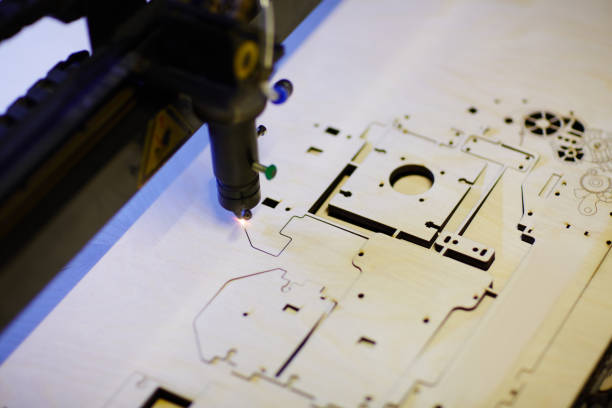
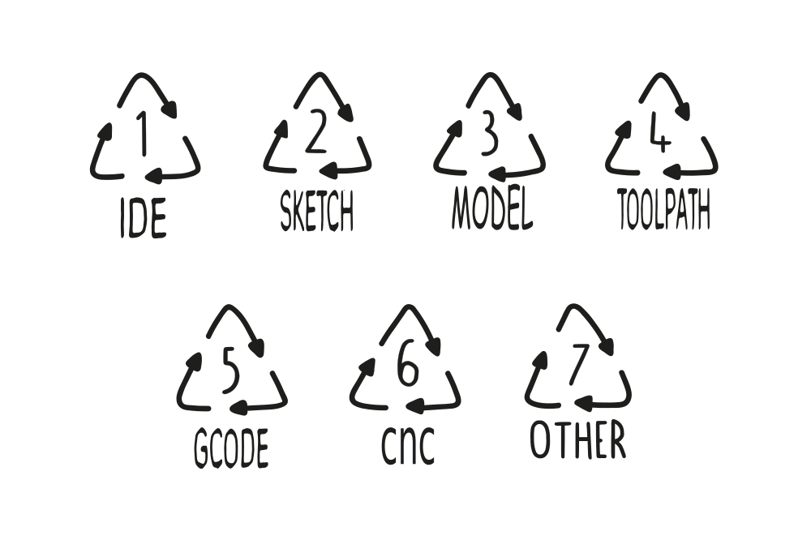
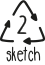

Buat Program Cnc Machine
Apa itu layanan pembuatan program cnc machine ?
Kami adalah komunitas Layanan Pemesinan CNC Kustom, Kami bekerja dengan jaringan online mitra manufaktur yang bersama-sama memiliki keahlian tingkat Kreatif dan profesional dalam bidang pembuatan sketsa model CAM & CAD untuk CNC mesin, Kami akan memberikan kemampuan mesin CNC Anda terus-menerus diberikan instruksi dengan Kode NC berkualitas tinggi. yang berarti kami selalu memiliki kapasitas dan harga yang sangat kompetitif. Ini juga berarti kami dapat membuatkan prototipe kompleks maupun pemograman 3, 4 and 5 axis dari suku cadang mesin presisi, dalam berbagai logam dan plastik atau Kayu dan juaga persiapan posisi ikatan akhir pada mesin CNC anda. 🎉
Pro-tip: Perangkat lunak CAM membuat gambar/desain CAD menjadi kode yang disebut G-code. G-code adalah kumpulan kode perintah yang mengarahkan mesin mengikuti instruksi dalam melakukan perhitungan.
Jika Anda mencari jasa pemrograman mesin cnc? Anda menemukan layanan yang tepat. Kami memiliki kandidat dengan sertifikat dalam pemrograman peralatan mesin CNC, dengan pengalaman sebelumnya sebagai programmer CNC in-house atau pengalaman kerja yang di industri, yang mahir membaca cetak biru dan perangkat lunak terkait industri.Tanggung jawab dalam meninjau pesanan pekerjaan, merancang model, melakukan perhitungan, menentukan alat dan kecepatan yang sesuai, menghasilkan kode program, dan menjalankan pengujian(Simulasi).
📓 Technical information
| 📓 Tipe | 3D Printer, Plasma, Laser, EDM,CNC machining center, dan CNC Lathe Dan Milling |
|---|
| 💎 Layanan | Buat file Program CAD & CAM, Pemrograman CNC atau permesinan CNC,Jalur pahat router CNC,file potong laser GRBL,Semua jenis jalur alat CNC.
|
| 💰 Program | Membuat 3 axis, 4 sxis Rotary atau 5 axis gcode untuk CNC Anda. itu bisa apa saja dari ini (printer 3D, Plasma, Laser, EDM, pusat permesinan CNC, dan Bubut + Penggilingan CNC |
| 💰 Software | AutoCAD, Catia, Creo, Fusion 360, Solidworks, Inventor, MasterCam, Lainnya |
| ⚖️ File Format | TXT, NC, PDF, DXF, STL, IGES |
| 📦 keahlian | CNC programming, 3D model, AutoCAD, SolidWorks, Fusion 360. Lainnya |
| ⚙️ merespon | 1 hour |
| ⏱ maksimum | 4H/Day |
| 🔌 Revisi | 3 |
| ⚡️ Paket | Basic, Standard, Premium |
| ♻️ Ulasan | 5 Bintang |
| - Perincian | Tingkat komunikasi penjual,Rekomendasikan ke teman,Layanan seperti yang dijelaskan |
| - Waktu | Sangat responsif |
| - Sertifikasi | Autodesk Bersertifikat Profesional Dalam Desain Untuk Manufaktur. Autodesk 2018 Autodesk Certified Professional Desain Mekanik Autodesk 2016 |

🛠 Keterampilan yang Dibutuhkan untuk Teknisi CNC
| Membangun cnc mesin | Mesin yang dibutuhkan | Keterampilan yang dibutuhkan |
|---|
 | - CNC Machining
- Bacaan cetak biru
- Mikrometer
- mesin bubut | - Kontrol numerik
- Penggilingan
- Operator mesin bubut
- Menginstruksikan |
|
💎 Apa saja layanan program yang kami berikan?

Layanan (1): Business Plan, Penawaran dalam memulai usahan projek machine cnc anda.
Layanan kami dirancang untuk menangani desain Program yang kompleks, berbagai kebutuhan code, dan setingan toolpath. Daftar Perangkat lunak dan Kemampuan Kami dalam memulai usaha.
| 🚩 Tipe | 🤝 Program |
|---|
| ⚙️ Design software | -Sketch, Gambar kasar, AutoCAD, Fusion 360, Inventor, KeyShot, Solidworks, feeling
|
| 💰 Bidang keahlian | -Rencana aksi, Kalkulator Ruang Kerja, Templat Rencana Bisnis |
| ⚡️Software | -AutoCAD, Catia, Creo, Fusion 360, Solidworks, Inventor, MasterCam, Lainnya |
| ⚖️ File Format | -PDF, Other |
| 📦 Materials | -Machine Template |
| Kamu akan mendapatkan: | -Instruksi, Alat Bisnis perencanaan |
| 💫 Apa yang saya perlukan untuk memulai proyek Anda? | -Feeling, Mari kita mulai! |
Layanan (2):Penawaran Layanan model cnc sketch design.
Tim Ahli dalam Adobe Photoshop dan Adobe Illustrator.

| 🚩 Tipe | 🤝 Program |
|---|
| ⚙️ Design software | -AutoCAD, Fusion 360, KeyShot, Solidworks, ArtCAM Pro, Luxion Keyshot, MasterCAM, Adobe Photoshop, Adobe illustrator Other |
| 💰 Bidang keahlian | -2d Drawing, 3d CAD Design, CNC Drawing, Surface Modelling, CAD Model, Product Design, Mechanical Product Design, 3d Modelling, 3d printable Ready Models (.stl,.obj), 3d Mold Models, laser cutting files (.dxf,.dwg), Industrial product Model, 3d Rendering. , 3d Product models., Vector tracing, Conversion of 2D Drawing or Sketch into 3D models, File conversion (PDF, STP, JPEG, STEP, DWG ), Photorealistic rendering |
| ⚡️Software | -AutoCAD, Catia, Creo, Fusion 360, Solidworks, Inventor, MasterCam, Lainnya |
| ⚖️ File Format | -JPG, STEP, FBX, DWG, DXF, 3DS, SVG, CDR, EPS, STL, IGES, PNG, PDF, Ai, Sesuai dengan Kebutuhan Anda |
| 📦 Materials | -Sketch, Image, Pdf, Other |
| Kamu akan mendapatkan: | -3D Cad Model and Source Files |
| 💫 Apa yang saya perlukan untuk memulai proyek Anda? | -Gambar Referensi (jpg, png, vektor, pdf, dan format apa pun) atau gambar 2d produk Anda beserta dimensinya, Sketsa kasar yang digambar tangan. |
Layanan (3):Penawaran Concept 3D Desiging
Gunakan Fusion 360 dan Keyshot 10 dan beberapa Perangkat Lunak terkait lainnya untuk semua persyaratan yang disesuaikan

| 🚩 Tipe | 🤝 Program |
|---|
| ⚙️ Design software | -Blend, Fusion 360, Inventor, KeyShot, Solidworks |
| 💰 Bidang keahlian | -Consumer electronics,Furniture,Machinery |
| ⚡️Software | -AutoCAD, Catia, Creo, Fusion 360, Solidworks, Inventor, MasterCam, Lainnya |
| ⚖️ File Format | -STL, OBJ, 3MF, BLEND, PDF, Other |
| 📦 Materials | -Sketch, Image, Pdf, Other |
| Kamu akan mendapatkan: | -3D Cad Model and Source Files |
| 💫 Apa yang saya perlukan untuk memulai proyek Anda? | -Gambar Referensi (jpg, png, vektor, pdf, dan format apa pun) atau gambar 2d produk Anda beserta dimensinya, Sketsa kasar yang digambar tangan. Flexible |
Layanan (4): File NC untuk pemrograman CNC, pemotongan Mesin CNC, dan ukiran
Memberikan layanan, dan menyelesaikan masalah Anda yang terkait dengan bidang toolpath mekanik
| 🚩 Tipe | 🤝 Program |
|---|
| ⚙️ Design software | -FUSION 360, MASTERCAM, SIEMENS NX, SOLIDWORKS |
| 💰 Bidang keahlian | -CNC router tool path, CNC DESIGN, CNC Wood Curving, Wood-Engraving, G-Code, CNC tool-path, CNC ProgrammingCNC Machining, Manual g Code |
| ⚡️Software | -AutoCAD, Catia, Creo, Fusion 360, Solidworks, Inventor, MasterCam, Lainnya |
| ⚖️ File Format | -G CODE, DWG,STL,SLDPRT,SLDASM,STEP Other |
| 📦 Materials | -Sketch, Image, Pdf, Other |
| Kamu akan mendapatkan: | -Simulation dalam CNCSIMULATOR, Toolpath dengan delivered at MMG ,TAP TXT file and Source Files |
| 💫 Apa yang saya perlukan untuk memulai proyek Anda? | -Anda mengirim model cad 3d atau gambar atau menggambarkan pekerjaan Anda, Saya membuat draf desain karya Anda dan mengirimkan cuplikan layar pratinjau, Anda memilih salah satu dari mereka atau menjelaskan bagaimana mengubahnya, Akhirnya Anda mendapatkan desain yang tepat yang Anda inginkan + jalur alat |
Layanan (5): Cnc programming, for 2, 3, 4, 5 axis machines
Desain produk, Desain Cetakan & tugas terkait CAM dan semua jenis analisis/Simulasi Produk
| 🚩 Tipe | 🤝 Program |
|---|
| ⚙️ Design software | -Creo,Inventor,Solidworks,Fusion 360, Inventor, KeyShot, Solidworks,PowerMill,Mastercam,Solidcam Other |
| 💰 Bidang keahlian | -CNC Programming,CNC Lathe Programming,CNC Milling Programming,CNC Index Programming,CNC A C Axis Programming |
| ⚡️Software | -AutoCAD, Catia, Creo, Fusion 360, Solidworks, Inventor, MasterCam, Lainnya |
| ⚖️ File Format | -G CODE TOOLPATH, PDF, STL, SLDDRW, OBJ, Others |
| 📦 Materials | -Sketch, Image, Pdf, Other |
| Kamu akan mendapatkan: | -CNC Lathe Programming,CNC Milling 3 Axis Programming,CNC Index 4 Axis Programming,Multi Axis Programming,Programming For Manufacturing of Dies and Mold Through CNC Machines,CNC Programming and Source Files |
| 💫 Apa yang saya perlukan untuk memulai proyek Anda? | -Anda mengirim model cad 3d atau gambar atau menggambarkan pekerjaan Anda, Saya membuat draf desain karya Anda dan mengirimkan cuplikan layar pratinjau, Anda memilih salah satu dari mereka atau menjelaskan bagaimana mengubahnya, Akhirnya Anda mendapatkan desain yang tepat yang Anda inginkan + jalur alat, Flexible. |
| 🤝 Cara terbaik untuk digunakan dengan mesin CNC: | -Bekerja dengan baik dengan semua mesin! Kami menyukai kerjasama! |
Layanan (6):Penawaran Program Pemesinan CNC
Layanan kami dirancang untuk menangani desain Program yang kompleks, berbagai kebutuhan code, dan setingan toolpath
| 🚩 Tipe | 🤝 Program |
|---|
| ⚙️ Design software | -AutoCAD, Fusion 360, Inventor, KeyShot, Solidworks |
| 💰 Bidang keahlian | -Consumer electronics,Furniture,Machinery |
| ⚡️Software | -AutoCAD, Catia, Creo, Fusion 360, Solidworks, Inventor, MasterCam, Lainnya |
| ⚖️ File Format | -PDF,DWG,STL,STEP,Other |
| 📦 Materials | -Metal, Non-logam, other |
| Kamu akan mendapatkan: | -3, 4 and 5 axis CNC Programing, with G codes and NC Files |
| 💫 Apa yang saya perlukan untuk memulai proyek Anda? | -Ahanya perlu file cad model Anda |
| 🤝 Cara terbaik untuk digunakan dengan mesin CNC: | -Bekerja dengan baik dengan semua mesin! Kami menyukai kerjasama! |

Dan selalu ingat:
Jenis ide yang berbeda tidak boleh dicampur bersama karena ini akan menurunkan kualitasnya secara drastis dan membuatnya sangat sulit untuk dijelaskan. Selain itu, ketika berbagai jenis ide/rancaangan anda dilebur bersama, mereka cenderung terpisah fase, seperti minyak dan air, dan tersusun berlapis-lapis yang mengakibatkan kelemahan / stres dan produk berkualitas lebih rendah.
⚡️ Apa yang kami perlukan untuk memulai proyek Anda?
Kami menyukai kerjasama yang Flexible dalam memulai pekerjaan sehingga mendapat hasil akhir yang memuaskan bagi anda dan kami sebagai komunitas serta dukungan terhadap program kami semoga mendapatkan peningkatan profit bagi mesin anda dan layanan kami NCCommunity Adademy.
- Gambar kasar atau Referensi (jpg, png, vektor, pdf, dan format apa pun) atau gambar 2d produk Anda beserta dimensinya, Sketsa kasar yang digambar tangan.
- Anda mengirim model CAD 3d atau gambar atau menggambarkan pekerjaan Anda, kami akan membuatkan draf desain karya Anda dan mengirimkan cuplikan layar pratinjau, Anda memilih salah satu dari mereka atau menjelaskan bagaimana mengubahnya.
- Peralatan yang digunakan seperti : jenis/nama mesin anda, mata pisau router anda, koordinat ikatan mesin, kecepatan spindle motor dan beban material yang digunakan.
- Fitur yang digunakan mesin anda seperti: pendingin ruangan yang digunakan,tegangan arus pada mesin, kekuatan jalur motor mesin anda, dan peralatan pendukung lainnya yang anda gunakan.
- Tingkat keahlian operator dalam mengerjakan mesin anda: Kinerja operator dapat mempengaruhi proses kinerja mesin, berikan kami keahlian operator anda agar kami dapa mengintruksi langkah pekerjaan untuk memdapatkan kinerja yang fleksible.
- Fokus Projek manufacture yang biasa anda kerjakan (optional) agar kami dapat memberikan solusi yang berkelanjutan untuk pekerjaan mesin anda.
- Technical information Mesin anda (optional): data infomasi mesin anda dapat mendukung proses pembuatan program CNC anda.
Pro-tip: kerjasama yang Flexible dalam memulai pekerjaan sehingga mendapat hasil akhir yang memuaskan bagi anda dan kami sebagai komunitas serta dukungan terhadap program kami.
🛠 Tips & tricks yang Harus Dilakukan Sebelum Membuat Program CNC
Langkah Pertama : Tentukan operasi pemesinan yang akan dilakukan. Salah satu cara untuk mengidentifikasi permukaan mesin adalah dengan menggunakan pena berwarna dan menandai salinan kerja dari gambar teknik. Cara lainnya adalah membuat daftar permukaan mesin dan alat pemotong terkait.
Langkah Kedua : Tentukan urutan pemesinan. Saya merekomendasikan menggunakan urutan formulir perencanaan operasi. Judul untuk formulir ini dapat mencakup:
- nomor langkah
- Deskripsi operasi
- Nama pahat potong (dengan komponen pahat yang dicantumkan secara terpisah)
- Nomor stasiun alat pemotong
- Kecepatan poros
- Tingkat umpan
- Catatan/masalah untuk langkah
Langkah Ketiga : Lakukan matematika. Anda harus menghitung koordinat yang diperlukan untuk program. Juga akan ada kondisi pemotongan (kecepatan dan umpan) untuk dihitung, bahkan jika menggunakan sistem CAM.
Langkah Keempat : Pertimbangkan perangkat workholding. Contohnya termasuk orientasi perlengkapan di atas meja, klem yang harus dihindari, permukaan lokasi dan konfigurasi rahang untuk chuck tiga rahang . Hanya dengan pemahaman yang jelas tentang bagaimana benda kerja akan dipegang dalam pengaturan, Anda dapat membuat program CNC yang dapat diterima.
Langkah Kelima : Pertimbangkan alat pemotong. Anda harus membuat daftar komponen yang membentuk setiap alat pemotong. Informasi ini akan disertakan dalam dokumentasi pengaturan. Melakukan ini sebelum pemrograman dapat mengekspos masalah yang memengaruhi apa yang harus dilakukan program.
Langkah Keenam : Tulis dokumentasi. Kembangkan dokumentasi pengaturan dan proses produksi seolah-olah program CNC telah dibuat. Memikirkan apa yang harus dilakukan orang dan operator saat menjalankan pekerjaan dapat mengungkapkan sesuatu yang dapat Anda lakukan dalam program untuk membantu mereka. Apakah pengaturan workholding memenuhi syarat?
Meskipun langkah-langkah persiapan ini memakan waktu, melewatkannya bisa menjadi tindakan yang sembrono dan boros, terutama jika Anda mempertimbangkan waktu (mati) mesin yang akan diperlukan untuk memperbaiki masalah yang seharusnya ditangani selama tahap persiapan. Tidak ada alasan untuk membuang-buang waktu mesin untuk sesuatu yang mendasar seperti tidak benar-benar siap untuk membuat program sejak awal.
♻️ Masukan & Hasil
tipe: Catatan, referensi,kronologi.
Open sounce: Cad & Cam.
Output: G-Code, Simulasi.
⚙️ Rutinitas Perawatan CNC Sederhana
Membeli mesin CNC baru untuk bengkel rumah Anda atau toko mesin kecil dapat memberi bisnis kecil Anda keunggulan besar dalam persaingan. Anda telah langsung menambahkan mesin kelas atas yang mampu melakukan operasi yang sangat presisi, mulai dari prototipe satu kali atau suku cadang khusus hingga produksi skala besar.
Pro-tip: Lokasikan kerja mesin cnc dalam ruangan 4 x 6 meter untuk minimal pekerjaan rumahan.
Mesin CNC langkah demi langkah?
- Pra-Mulai.
- Mulai/Beranda.
- Memuat Alat.
- Pasang Hapus Bagian ke dalam catok.
- Atur Offset Panjang Alat Z.
- Setel Bagian Offset XY
- Muat Program CNC
- Dry Run
- Jalankan program
- Sesuaikan Offset sesuai Kebutuhan
- Jalankan program
- Mematikan
🔓 Penyelesaian masalah
Menggunakan Alat Pemotong/Pengaturan yang Salah
Untuk mengatasi ini, penting untuk memilih alat dan pengaturan yang tepat untuk pekerjaan dan material. Kesalahan dalam Pemrograman
Untuk mengatasi kesalahan ini, penting bagi operator baru untuk dilatih secara memadai dalam berbagai cara di mana mesin CNC dapat diprogram. Perawatan Alat Mesin CNC yang Buruk
Mereka juga harus secara teratur memeriksa tingkat cairan pendingin atau aliran udara, misalnya filter udara, untuk memastikan bahwa pengoperasian tetap lancar dan tidak terganggu. Keterampilan dan Pelatihan Pekerja yang Tidak Memadai
Untuk memastikan bahwa ini teratasi, Anda perlu mempekerjakan operator mesin yang tepat yang dapat memvisualisasikan dan merancang proses pemesinan, memilih alat dan urutan yang benar untuk pekerjaan itu, dan menulis program.
🌦 Pro kontra
| kelebihan | kekurangan |
|---|
| Kemudahan Penggunaan | Memilih paket CAM yang salah bisa menjadi mimpi buruk |
| Pengenalan Fitur / Toolpaths | Kesalahan jalur alat |
| Umpan & Kecepatan | Bugs |
🌎 Dibangun oleh komunitas
🙌 NCComunity
Jika Anda memerlukan bantuan, ajukan pertanyaan atau cari seseorang untuk diajak bicara di ruang kerja Anda yang dingin dan sepi.Di sini kita berbicara tentang mesin.